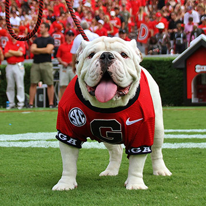
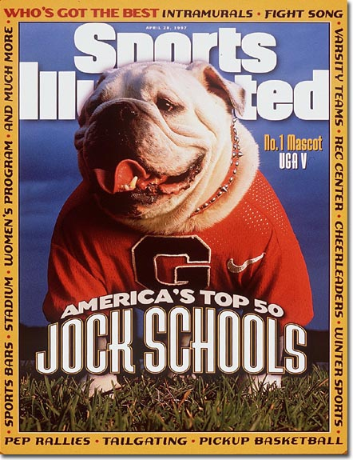
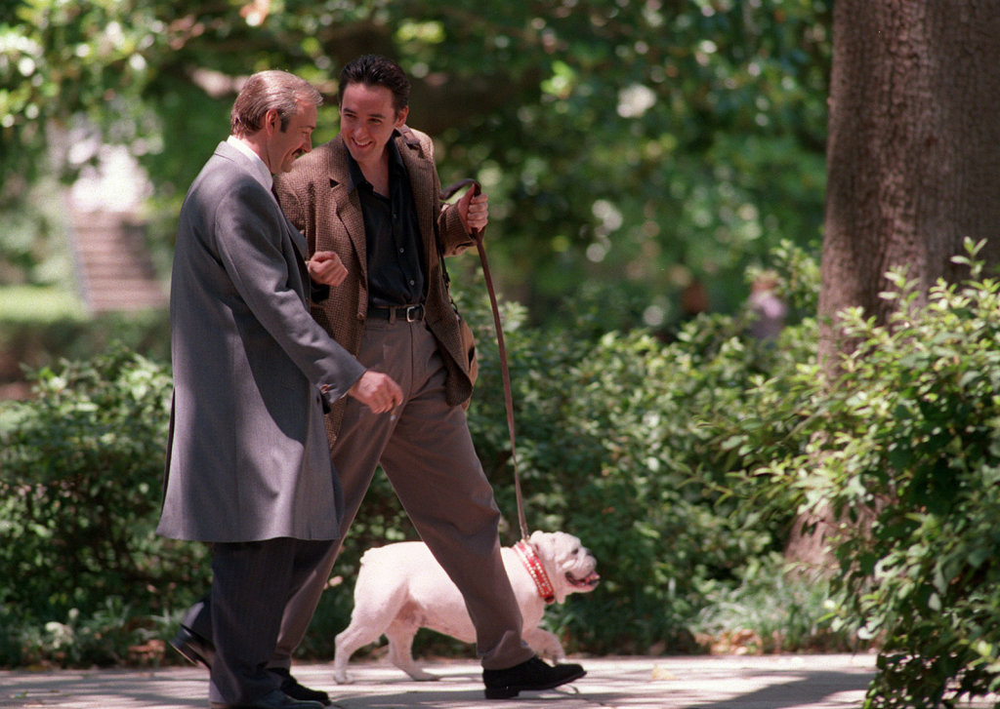

Bulldogs are a popular medium-sized dog breed that are commonly referred to as English Bulldogs. UGA (uh-guh) is one of these bulldogs and he is the University of Georgia's live mascot. The current UGA is nicknamed "Que" and is the tenth dog to be and perform the duties of the mascot. The name UGA comes from a play on The University of GeorgiA.
There have been nine previous UGAs, all of which have descended from UGA I.
| Name | Nickname | Years Served |
|---|---|---|
| UGA I | Hood's Ole Dan | 1956-66 |
| UGA II | Ole Dan'd UGA | 1966-72 |
| UGA III | Seiler's UGA Three | 1972-81 |
| UGA IV | Seiler's UGA Four | 1981-90 |
| UGA V | UGA IV's Magillicuddy II | 1990-99 |
| UGA VI | UGA V's Whatchagot Loran | 1999-2008 |
| UGA VII | Loran's Best | 2008-09 |
| UGA VIII | Big Bad Bruce | 2010-11 |
| UGA IX | Russ | 2012-15 |
| UGA X | Que | 2015-present |
UGA IV has the most wins during his mascot tenure with 77. He also has the best win-loss percentage with .731. UGA V is named in honor of Dan Magill the Sports Information Director who initially suggested UGA become the mascot of the school.
Sonny is a graduate of The University of Georgia Law School and brought the first member of the line - now UGA I - to the home opener in 1956. The Sports Information Director for the Athletic Association, Dan Magill, noticed a photo of the dog at the game and suggested he return to future games as the mascot. Sonny has owned all UGAs since the start in 1956 along with his wife and children.
One of the most famous UGA moments was when UGA V leaped at an Auburn player during the Georgia-Auburn game in 1996.

In April, 1997 UGA V was named the nation's best college mascot by Sports Illustrated and was featured on the cover of the magazine. He was the first live college mascot to ever appear on the cover.

Also in 1997, UGA V appeared in the movie Midnight in the Garden of Good and Evil. This was after his father UGA IV appeared in the book of the same name.